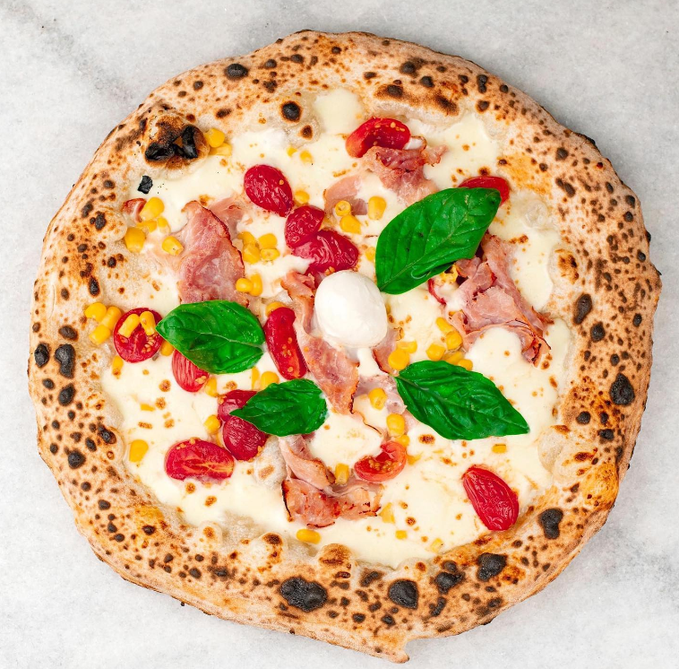
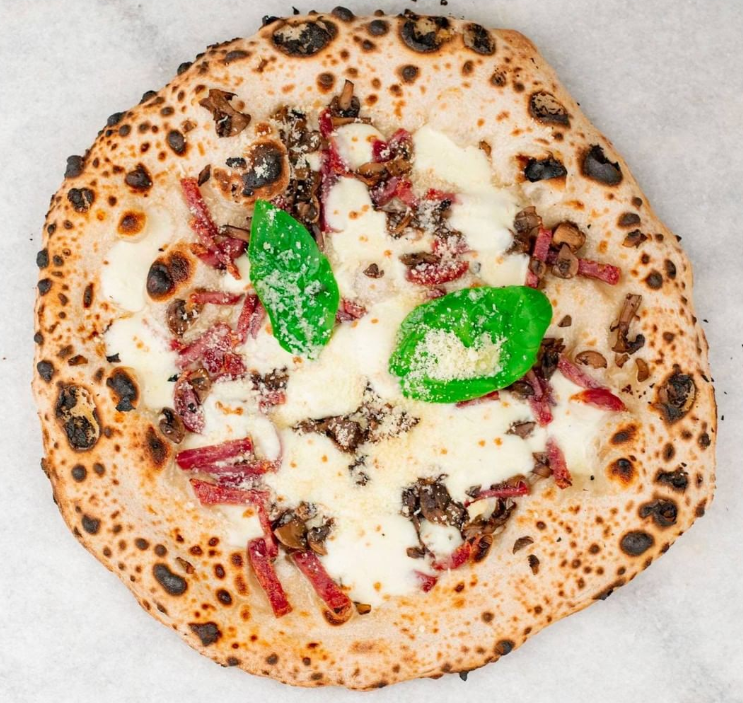
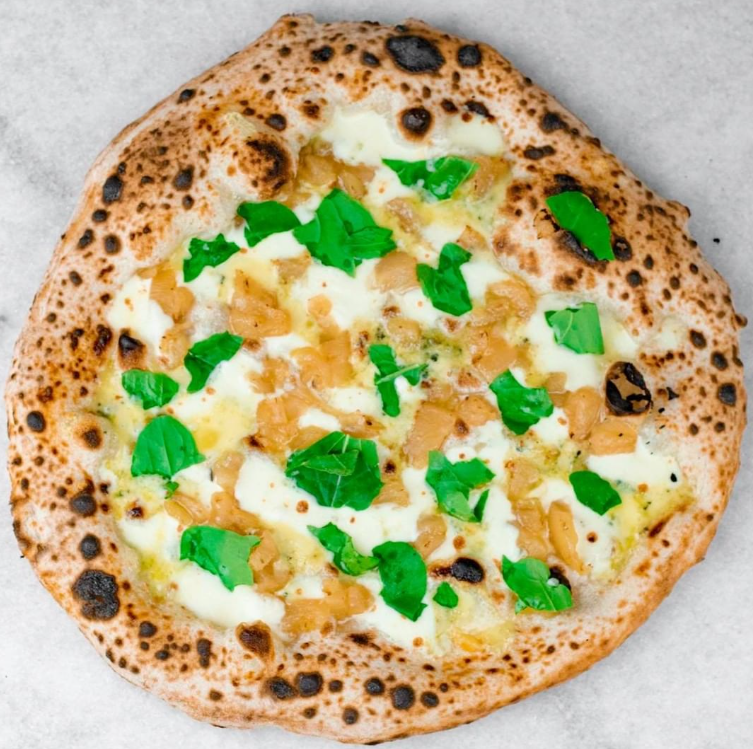
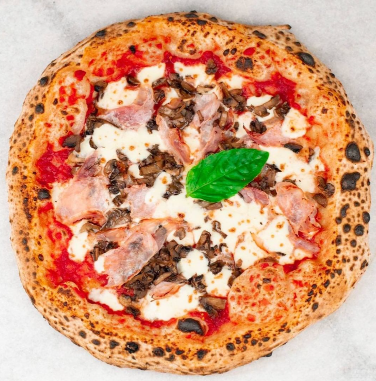
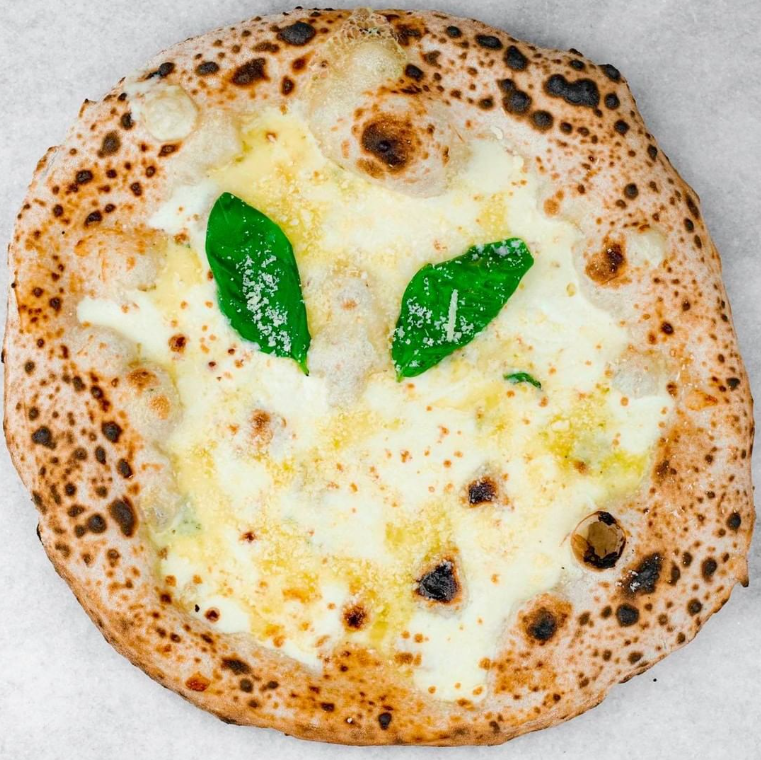

La bandera boliviana, nos inspiró a crear la Tricolore, una pizza e ingredientes italianos con colores Bolivianos.
Ingredientes: Mozzarella italiana, jamón crudo tipo serrano, tomate cherry, rúcula y parmesano rallado
Extra: Salsa de tomate

La Allegra
En Napoli, cuando pensamos en el choclo, recordamos nuestra niñez, cuando lo comíamos en la playa al bajar el sol. Así que hicimos la pizza de nuestra felicidad, la Allegra.
Ingredientes: Mozzarella italiana, choclo, tomate cherry, jamón cocido y albahaca.
Extras: Aceitunas - Rúcula

La Vesuviana
La Vesuviana viene del monte Vesuvio, volcán icónico que se encuentra en la zona rural de Napoles, lugar donde abundan sus principales ingredientes.
Ingredientes: Molho, Queijo, Tomate cereja, Presunto e Folhas frescas de manjericão.

La Tropicale
La pizza es la masa, la mmasa es la pizza, sin prejuicios a ningún ingrediente, solo necesitamos la fusión perfecta: roquefort + rúcula + piña = La Trocipale
Ingredientes: Mozzarella italiana, piña, queso azul y rúcula.

La Prosciutto e Funghi
La prosciutto e funghi solo necesita 4 ingredientes para un sabor fenomenal: salsa de tomate, mozzarella italiana, jámon cocido y champiñones.
Ingredientes: Salsa de tomate, mozzarella italiana, jamón cocido, champiñones y albahaca
Extras: Aceitunas - Rúcula

La Quattro Formaggi
Una pizza sin quesos es como el amor si besos. Mozzarella italiana, provola, queso azul y parmesano = La 4 Formaggi.
Ingredientes:Mozzarella italiana, fontina, queso azul, parmesano y albahaca.